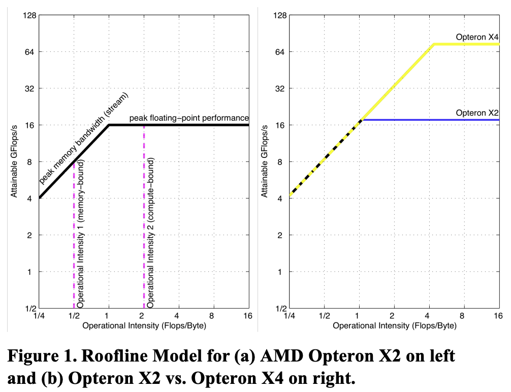
机器能算多快？数据能喂多快？最终速度取决于更矮的那块屋顶。
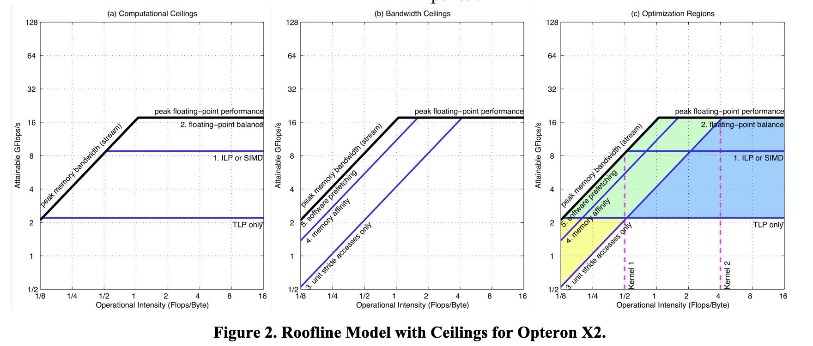
如果 OI 不够，继续加矩阵单元可能只是让更多硅片等待数据。
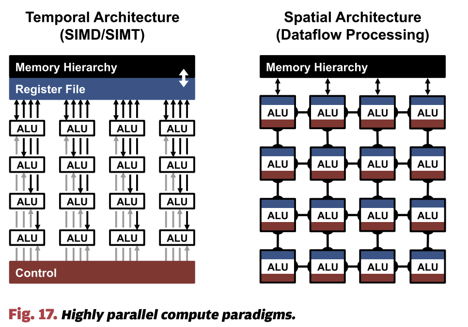
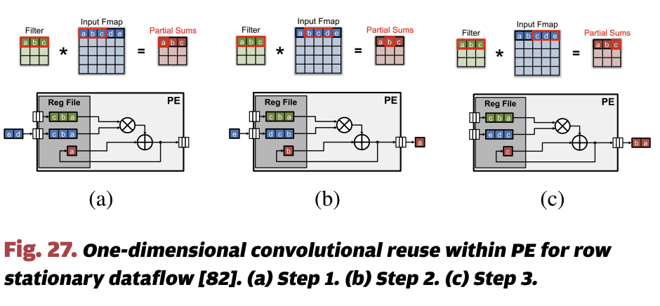
程序员不用明确说数据放哪里，硬件自动把可能复用的 cache line 留在近端。
GEMM tile、attention block、conv tile、weight / activation / partial sum，适合 HBM -> SMEM/VMEM/scratchpad -> tensor core。
metadata、gather/scatter、CPU 控制流、KV cache 动态管理、跨 kernel 复用、runtime 和系统软件仍然需要 cache。
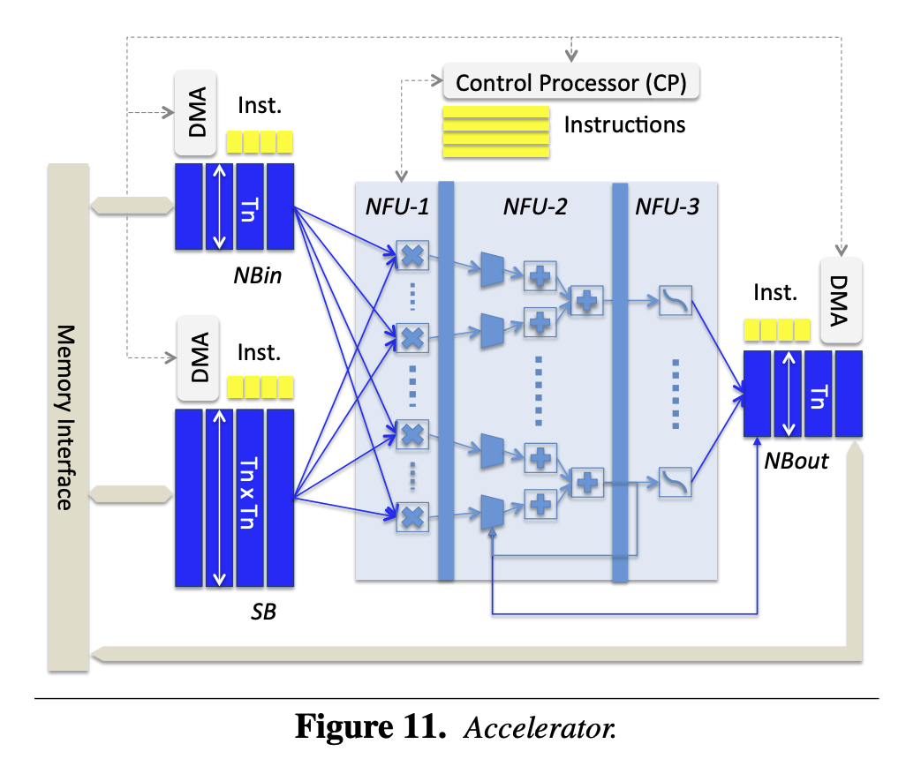
DianNao 很早就指出：规则 DNN 访问里，通用 cache 的 tag、associativity、speculative read 和 conflict 可能变成额外成本。
脉动阵列的重点不是“很多 MAC”，而是 A/B 元素在二维阵列中传播并被重复消费。
一个 A 元素被同一行多个 PE 复用。
一个 B 元素被同一列多个 PE 复用。
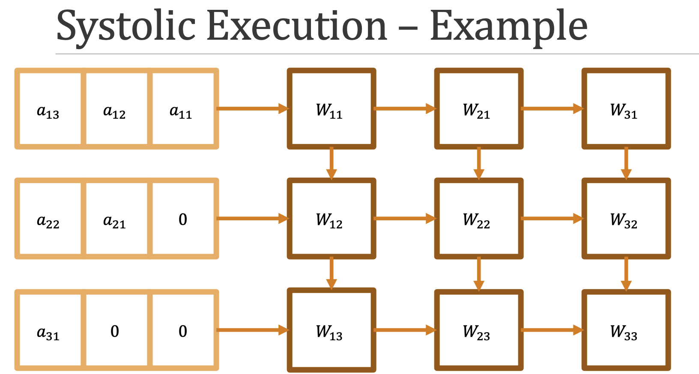
TPU 拿掉大量动态机制，用 MXU、VMEM 和编译器调度 DMA 换取密度、确定性和规模化互联。
在 AI 加速器里，编译器/runtime 不只是翻译代码，而是在决定 tile shape、layout、fusion、DMA、buffer residency、barrier 和 MMA/MXU schedule。
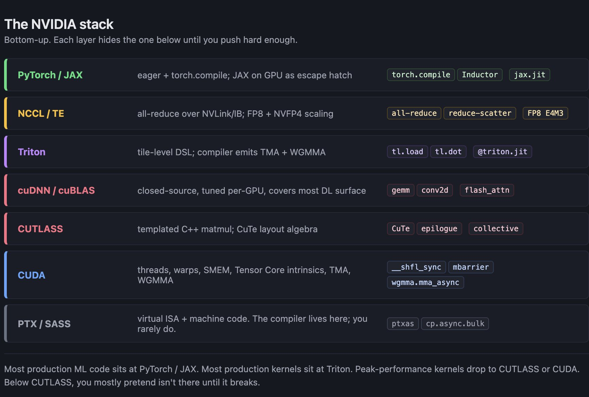
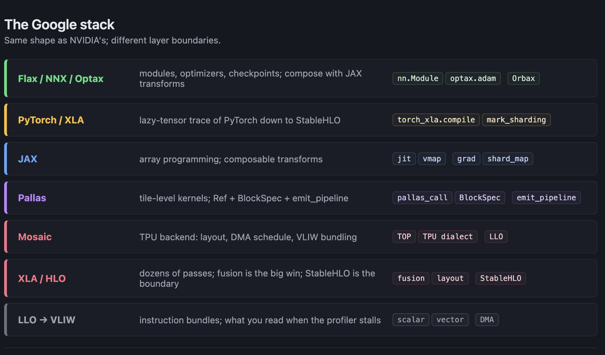
Timeloop 把“硬件描述 + workload + mapping constraints”变成可搜索的 mapspace。
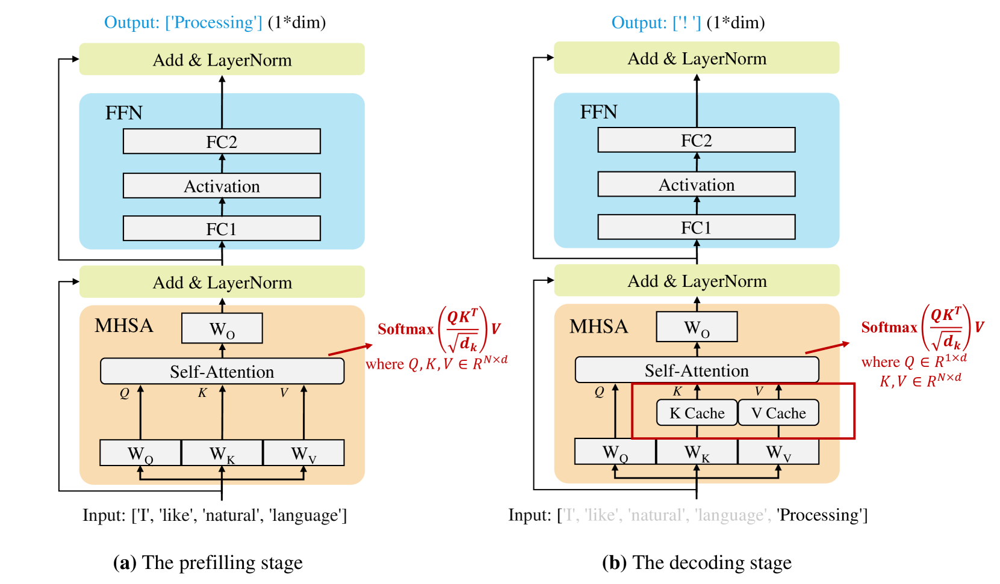
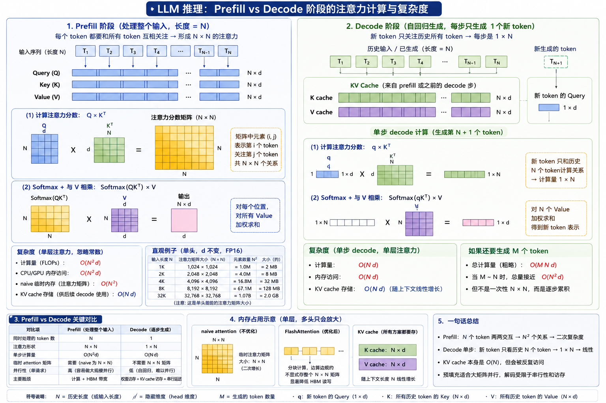
大 OoO core 搭配 CUTE 类 tensor core，共享 L2Cache；它还不是完整 TPU-like dataflow 机器。
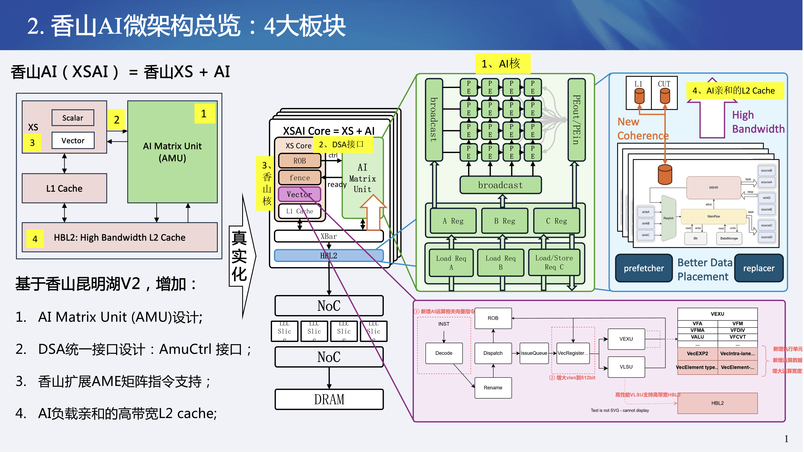
算力不是孤立指标，数据路径决定矩阵单元能不能被喂饱。
tile、mapping、DMA、layout、sync 的决策越来越前移到软件栈。
shared L2 是合理起点；scratchpad、vector、DMA 和更多指令要由 workload 与 gem5 数据推动。